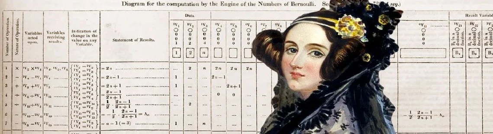
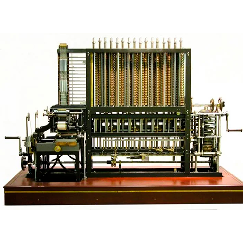

Ada Lovelace
A Condessa de Lovelace

Início
Quem foi Ada Lovelace?
Ada Lovelace, nascida Augusta Ada Byron King em 10 de dezembro de 1815, foi uma matemática e escritora britânica considerada uma das figuras mais importantes da história da computação. Embora tenha vivido em uma época em que a tecnologia ainda estava em seus primeiros passos, suas ideias ajudaram a moldar conceitos que hoje fazem parte do mundo digital.
Filha do famoso poeta Lord Byron e de Anne Isabella Milbanke, Ada cresceu cercada por estímulos intelectuais. Sua mãe incentivou o estudo da matemática e da lógica, acreditando que essas áreas desenvolveriam um pensamento racional e disciplinado. Esse incentivo foi fundamental para que Ada se tornasse uma das mentes mais inovadoras do século XIX.
Desde jovem, ela demonstrava grande curiosidade sobre máquinas, invenções e problemas matemáticos. Sua capacidade de unir criatividade e raciocínio lógico permitiu que desenvolvesse uma visão única sobre o futuro da tecnologia.
História
O encontro que mudou a computação
A trajetória de Ada Lovelace ganhou um novo rumo quando ela conheceu CharlesBabbage, matemático e inventor da Máquina Analítica. Esse projeto era revolucionáriopara a época, pois pretendia criar uma máquina capaz de executar operações complexasde forma automática.
Ada ficou fascinada pelo potencial da invenção e passou a estudar profundamenteseu funcionamento. Diferentemente de muitas pessoas da época, ela não enxergava amáquina apenas como uma calculadora avançada, mas como uma ferramenta capaz derealizar diversas tarefas por meio de instruções organizadas.
As famosas notas de Ada
Em 1843, Ada traduziu um artigo sobre a Máquina Analítica escrito pelo engenheiro italiano Luigi Menabrea. Durante esse trabalho, ela adicionou uma série de notas explicativas que acabaram se tornando mais extensas do que o próprio artigo original.
Entre essas anotações estava um conjunto de instruções detalhadas para que a máquina calculasse números de Bernoulli. Esse conjunto de instruções é amplamente reconhecido como o primeiro algoritmo criado especificamente para ser executado por uma máquina, motivo pelo qual Ada é considerada a primeira programadora da história.

Contribuições
O primeiro algoritmo da história
A principal contribuição de Ada Lovelace foi a criação do primeiro algoritmo destinado ao processamento automático por uma máquina. Mesmo sem que a Máquina Analítica tivesse sido concluída, suas instruções demonstraram como seria possível programar equipamentos para executar tarefas específicas.
Uma visão muito à frente do seu tempo
O aspecto mais impressionante de seu trabalho foi sua capacidade de imaginar aplicações que iam além da matemática. Ada acreditava que máquinas poderiam manipular símbolos, criar padrões e até produzir música.
Entre as possibilidades que ela imaginou estavam:
- Criação de composições musicais;
- Processamento de informações complexas;
- Manipulação de símbolos e linguagens;
- Desenvolvimento de sistemas capazes de seguir instruções detalhadas.
IEssas ideias anteciparam conceitos que hoje estão presentes nos computadores modernos, nos softwares, nos videogames e até mesmo na inteligência artificial.
A importância de suas ideias
Embora suas teorias não tenham sido plenamente compreendidas durante sua vida, elas demonstraram que os computadores poderiam ser usados para muito mais do que simples cálculos. Essa visão tornou-se um dos pilares da computação moderna.
Legado
Reconhecimento mundial
Por muitos anos, as contribuições de Ada Lovelace permaneceram pouco conhecidas. Entretanto, com o avanço da computação no século XX, pesquisadores passaram a reconhecer a importância de suas ideias e seu papel pioneiro na história da tecnologia.
Hoje, Ada é considerada uma das personalidades mais influentes da ciência e da computação. Seu trabalho é estudado em escolas, universidades e centros de pesquisa ao redor do mundo.
Inspiração para novas gerações
Além de suas contribuições científicas, Ada Lovelace tornou-se um símbolo da participação feminina nas áreas de ciência, tecnologia, engenharia e matemática. Sua história inspira milhares de estudantes a seguirem carreiras relacionadas à inovação e ao desenvolvimento tecnológico.
Um legado que continua vivo
Seu nome foi dado a projetos, premiações, eventos e até mesmo à linguagem de programação Ada. Mais de 170 anos após suas descobertas, suas ideias continuam influenciando a forma como entendemos e utilizamos a tecnologia.

Curiosidades
- Ada Lovelace nasceu em Londres, na Inglaterra, em 1815.
- Ela demonstrava interesse por matemática e invenções desde a infância.
- É considerada a primeira programadora da história.
- Trabalhou em colaboração com Charles Babbage, conhecido como o "pai do computador".
- O dia dedicado à sua memória, o Ada Lovelace Day, celebra a participação de mulheres na ciência e na tecnologia.
- Suas ideias sobre computadores surgiram quase um século antes da criação dos primeiros computadores eletrônicos.